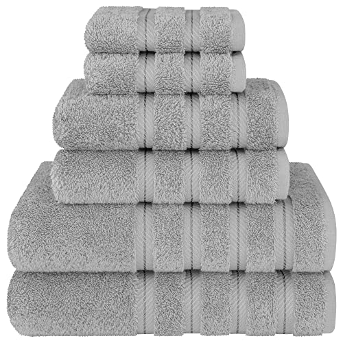
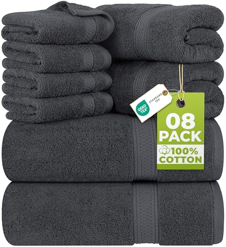
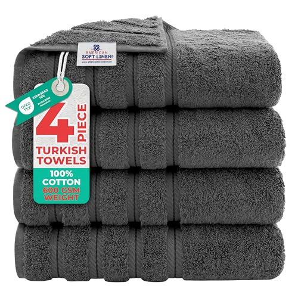
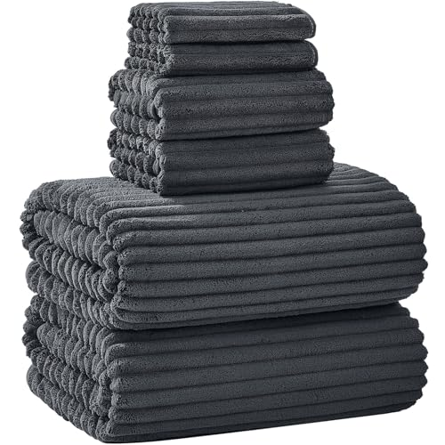
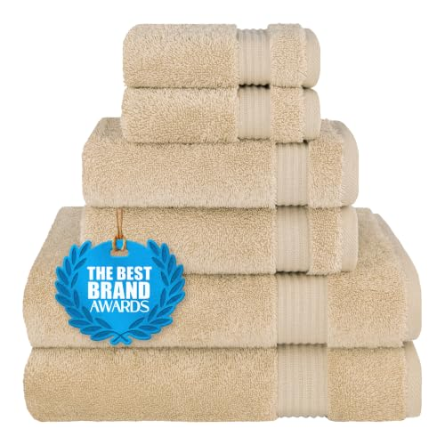
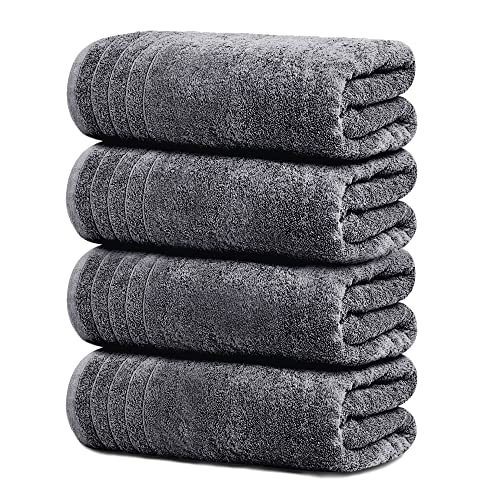
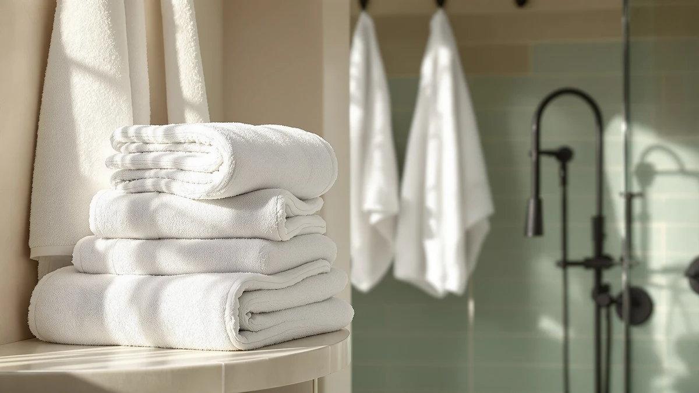
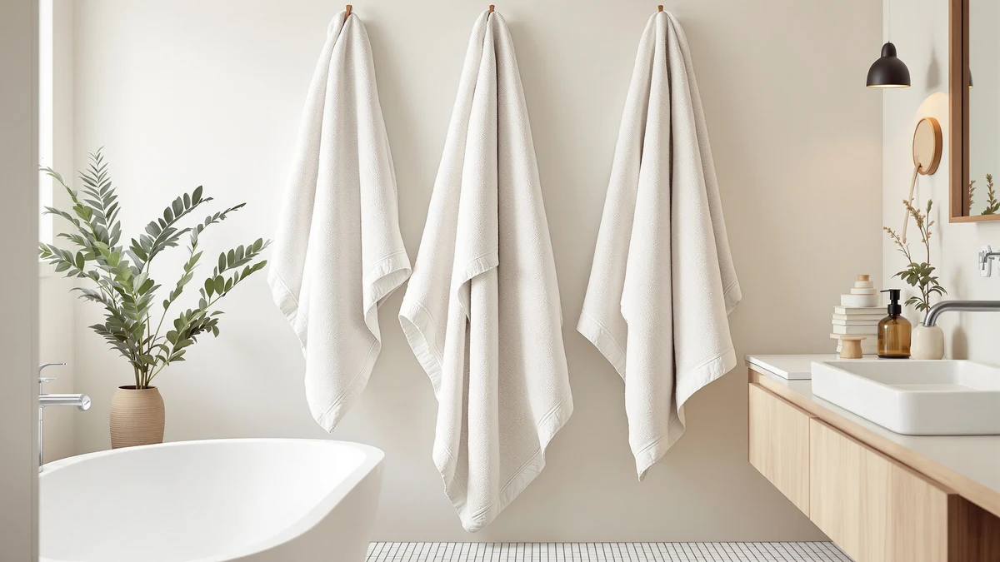
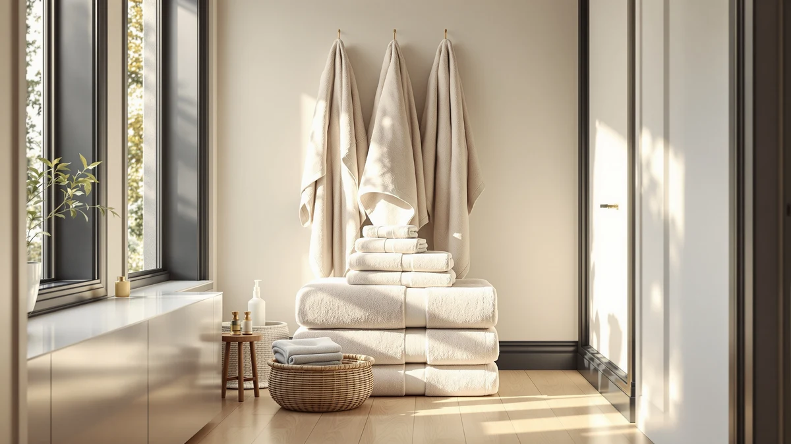

A towel's weight decides how it feels and how fast it dries.
Two white towels can look identical in a product photo. The one that stays soft and the one that stays damp or sheds lint differ in three places: the weight, listed as GSM; the fiber, from Turkish and Egyptian cotton to bamboo viscose and microfiber; and the size, from hand towel to bath sheet. We compare towels on those points, using spec sheets, current Amazon prices and what verified owners report.
Our 7 picks, side by side
From our full comparison of bath towels. Each one wins a specific job.
| Pick | Product | Price | Buy |
|---|---|---|---|
| Our Pick | Luxury White Bath Towel Set of 8 PiecesClassic, hotel-white, and easy to match to any bathroom | $39.99 | Check price |
| Best Colored Set |  American Soft Linen Luxury 6 Piece Towel SetSoft, color-flexible, and sized as a full six-piece set | $39.99 | Check price |
| Best Budget Set |  Utopia Towels 8 Piece Luxury Towel SetAffordable, complete, and the lowest cost per piece here | $28.99 | Check price |
| Best Full-Size Set |  American Soft Linen Luxury 4 Piece Bath Towel SetPlush, ring-spun, and sized as four standard bath towels | $35.96 | Check price |
| Best Oversized |  NALIVO Extra Large Bath Towel Set of 6Oversized, quick-drying, and built from microfiber | $55.98 | Check price |
| Best Turkish Cotton |  Cotton Paradise 100% Cotton Turkish Towel SetTurkish cotton, absorbent, and finished with a classic dobby border | $39.99 | Check price |
| Best for Travel |  Tens Towels Pack of 4 Extra Large Bath Towels 30 x 60 InchesThin, fast-drying, and built for travel or the gym | $35.99 | Check price |
Just published
New reviews and guides go up every day.

Polyte Microfiber Quick Dry Lint Free Oversize Bath Towel Set Review

Utopia Towels Luxurious Bath Towels Set Review

Bluenilemills Premium Towel Review

Chakir Turkish Linens Luxury Spa Review
Find the right towels for your bathroom
Guides and reviews from across the site, grouped by the question they answer.
Types and sizes
- Bath Towels vs Bath Sheets Size: Which Is Better?Comparison
- Bath Towels vs Kitchen Towels: Which Is Better?Comparison
- Bath Towels vs Pool Towels: Which Is Better?Comparison
- Oversized Bath Towels vs Regular: Which Is Better?Comparison
- The Best Budget Bath SheetsComparison
- The Best Organic Hand TowelsComparison
+ 54 more in all articles
Cotton and other fibers
- Best Bath Towel MaterialComparison
- Linen Bath Towels vs Cotton: Which Is Better?Comparison
- Bamboo Bath Towels vs Cotton: Which Is Better?Comparison
- The Best Turkish Bath TowelsComparison
- The Best Egyptian Cotton Bath TowelsComparison
- Towel Materials ExplainedGuide
+ 45 more in all articles
Softness, drying and care
- Best Bath Towels for Humid ClimateComparison
- How to Clean Bath Towels with Vinegar and Baking Soda: Complete GuideGuide
- The Best Plush Bath TowelsComparison
- Best Bath Towels for Absorbency and SoftnessComparison
- How to Fold Bath Towels Like a Hotel: 4 Easy MethodsGuide
- The Best Odor-Resistant Bath Towels: Stay Fresh LongerComparison
+ 8 more in all articles
Kids and baby
- The Best Bath Towels For kidsComparison
- Best Kids Bath Towels with HoodComparison
- Best Baby Bath Towels with HoodComparison
- Best Bath Towels for Toddlers: 7 Top PicksComparison
- Best Baby Bath Towels: 7 Top PicksComparison
- Burt's Bees Baby Toddler Hooded Animal Character Towels ReviewReview
Towel bars, hooks and racks
- Best Luxury Bath Towels with Hanging LoopsComparison
- How to Set Up Bath TowelsGuide
- How to Install Bathroom Towel RodGuide
- How to Install Bathroom Towel RadiatorGuide
- Best Bath Towels with Hanging LoopsComparison
- How to Install Bathroom Towel RailGuide
+ 6 more in all articles
Sets, colors and budget
- White Bath Towels vs Colored: Which Is Better?Comparison
- Best Bath Towel BrandsComparison
- Best Bath Towel SetsComparison
- Best Bath Towel ColorComparison
- Best Personalized Bath Towels with NamesComparison
- Best Bath Towels with PatternComparison
+ 42 more in all articles
How we research
What we compare
- Weight (GSM): lighter towels dry faster, heavier ones feel plusher and stay damp longer; 500 to 700 GSM suits most bathrooms.
- Fiber: Turkish or Egyptian cotton, standard cotton, bamboo viscose or quick-drying microfiber.
- Size: a bath towel runs roughly 27 by 52 to 30 by 56 inches; a bath sheet is closer to 35 by 60 or larger.
- Price: Amazon's current price, checked every night.
- What verified owners report after months of daily use.
What we don't do
We don't run a lab, and we don't claim to have installed or handled these products ourselves. Our picks come from published specifications, current Amazon prices and what verified owners report again and again.
Every Amazon link on this site is an affiliate link. It never decides the ranking.
Common questions
What GSM should a bath towel be?
For most bathrooms, around 500 to 700 GSM balances a soft, absorbent feel with a reasonable drying time. Lighter towels, around 300 to 500 GSM, dry faster and suit the gym, travel or a humid bathroom; heavier ones feel plusher but stay damp longer. Our GSM guide explains the ranges.
Bath towel or bath sheet: which should I buy?
A bath sheet is a larger cut, roughly 35 by 60 inches against about 27 by 52 to 30 by 56 for a bath towel. It wraps a tall person fully, but it costs more per piece, takes longer to dry and fills the washer faster. Our bath towel vs bath sheet comparison goes through the trade-offs.
Why have my towels stopped absorbing water?
Usually because of residue. Fabric softener leaves a waxy coating on the fibers and too much detergent builds up in the loops, so the towel pushes water around instead of soaking it up. Use less detergent, skip the softener and avoid high dryer heat; our washing guide walks through the routine.